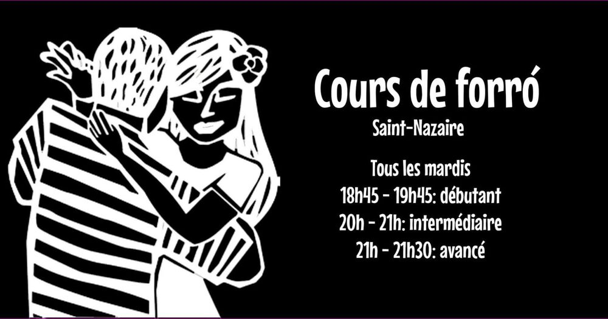
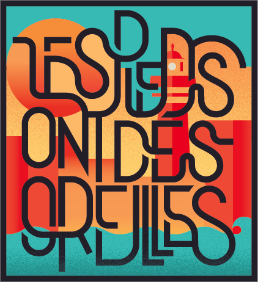

Portes ouvertes du cours de danse forró

Lieu : École Carnot, Saint-Nazaire
Venez apprendre à danser le forró. Tous les mardis : 18h45-19h45 débutant, 20h-21h intermédiaire, 21h-21h30 avancé. 150 €/an.

Les pieds ont des oreilles
Lieu : École Carnot, Saint-Nazaire
Venez apprendre à danser le forró. Tous les mardis : 18h45-19h45 débutant, 20h-21h intermédiaire, 21h-21h30 avancé. 150 €/an.